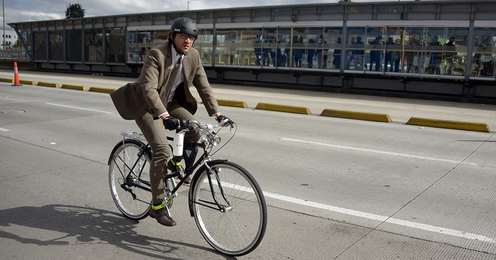

La bicicleta es un invento europeo. Dependiendo de lo que consideremos una bicicleta existen unas fechas u otras, siendo la primera bicicleta a pedales patentada como tal y a partir de la cual ha evolucionado la industria en el siglo XX la del británico John Kemp Starley en 1885, si bien es cierto que se basó en los modelos europeos construidos a lo largo de todo el siglo XIX.
Existe la creencia de que Leonardo Da Vinci creó el primer boceto en papel de una bicicleta (¡que incluía hasta la cadena de transmisión!) a finales del siglo XV, pero el investigador alemán Hans-Erhard Lessing demostró en 1997 que el diseño se introdujo en los documentos de Leonardo a partir de 1961. También a finales del siglo XVIII, un francés, el conde de Sivrac habría inventado el celerífero, un primitivo cuadro sobre dos ruedas con una cabeza de animal, pero autores como Max Rauck, Gerd Volke y Felix Paturi han desmentido esta fecha atribuyéndola a antiguas rivalidades nacionalistas entre franceses y alemanes.
Aplicación Tres, JPTM
Utilizacion como Medio de Transporte
Una ciudad con alta circulación de bicicletas por sus calles es, definitivamente, una ciudad amigable con el medio ambiente, pues lo ayuda a reducir los niveles de contaminación ambiental y sus niveles de monóxido y dióxido de carbono, hidrocarburos y otras partículas que favorecen la contaminación del aire.
Gracias a estos beneficios es que muchas ciudades en el mundo le apuntan al uso masivo de la bicicleta como alternativa para la movilización de personas. En ciudades como Santiago de Chile, Bogotá, Río de Janeiro, Lima y Medellín, los gobiernos promueven programas de desarrollo de políticas públicas que favorezcan la conducción de bicicletas, como la construcción de ciclorrutas, alquiler de bicicletas públicas y otros novedosos proyectos que han logrado un aumento significativo del uso de los vehículos de dos ruedas en el continente.

Aplicación Tres, JPTM
Tipos de Bicicletas
Bicicletas de Montaña (MTB): Están equipadas con llantas anchas con dibujos marcados para mejorar el agarre en terrenos sueltos. Regularmente usan manubrios rectos o de doble altura.
Las MTB se pueden encontrar sin suspensión (rígidas), con suspensión delantera (hardtail) o con doble suspensión (full-suspension) dependiendo de su especialidad.
Bicicletas de Ruta: Orientadas a obtener velocidad en pavimento, de construcción más ligera que otras bicicleta, están dotadas con ruedas más grandes, delgadas y provistas de llantas angostas y con dibujo liso. Las bicis de ruta utilizan manubrios drop-bar para lograr una postura más aerodinámica.
Bicicletas Urbanas: Nos referimos como bicicleta urbana a las bicis estilo holandés (Dutch).
Estas bicicletas fueron concebidas para la ciudad, por lo que son de construcción bastante solida tanto en su cuadro como en sus ruedas. Están perfectamente adecuadas para soportar las condiciones de una ciudad (baches, banquetas, topes, etc.)nos referimos como bicicleta urbana a las bicis estilo holandés (Dutch).
Estas bicicletas fueron concebidas para la ciudad, por lo que son de construcción bastante solida tanto en su cuadro como en sus ruedas. Están perfectamente adecuadas para soportar las condiciones de una ciudad (baches, banquetas, topes, etc.).
Bicicletas plegables: Casi todas las plegables están diseñadas para uso urbano, no obstante existen modelos que aguantan viajes largos sin problemas.
Un inconveniente de de las ruedas pequeñas es que son más sensibles a las imperfecciones del camino, aunque si lo que necesitas es una bici que puedes llevar contigo en todo momento no hay como una plegable.
En general vienen equipadas con 18- 20 cambios..
BMX: Las BMX utilizan cuadros pequeños y resistentes, ideales para saltos y acrobacias. Existen diferentes variables de estas bicicletas, algunas con llantas anchas para usarse en terrenos sueltos y otras con llantas un poco más delgadas y lisas para usarse en rampas o en la calle. Estas bicicletas no son eficientes como medio de transporte..
Puede que vaya abrigado para combatir el viento que sopla en su cara o puede que vaya con ropa de verano y a un ritmo apaciguado porque el sol ya empieza a calentar. De cualquier manera, esta persona forma parte de una comunidad de mil millones de miembros que, con este sencillo ritual, están contribuyendo a salvar el Planeta de un modo que tal vez ni ellos se imaginan. Por ellos y para todos se celebra este domingo, 19 de abril, el Día Mundial de la Bicicleta. Tienen motivos de sobra para festejar su elección de medio de transporte y –todavía- mucho por lo que luchar.
Más de 100 millones de bicis
El uso de las dos ruedas es la gran alternativa al congestionado tránsito de las ciudades a lo largo y ancho del globo. ¿Sabías que cada año se venden más de 100 millones de bicicletas en todo el mundo? Es una cifra que cuadriplica los datos de la década de los 70, y que sin duda hacen presagiar que cada vez hay mayor preocupación por cuidar el Planeta. No decimos nada nuevo si explicamos que se trata del transporte más económico, ecológico, sostenible y saludable.


 1
1 2
2 3
3 4
4 5
5 6
6 7
7 8
8